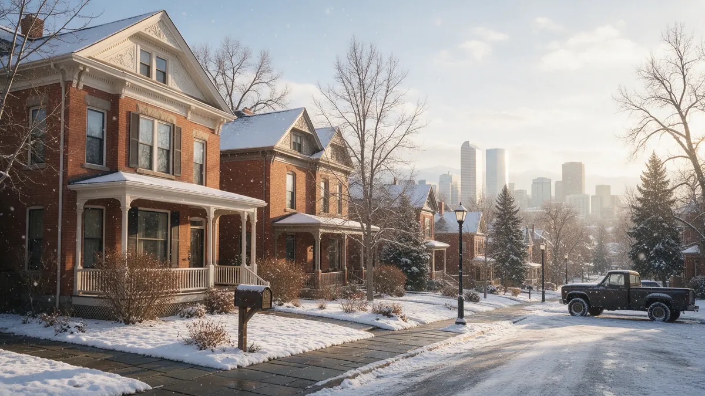

Denver CO Plumber Guide for Water Leaks

If you need a plumber in Denver CO because water is where it should not be, this guide walks you through the next steps in order. Plumbing Pros Colorado is a referral line, so a call connects you with an independent local plumber who does the work. Here is what to do before the call, what to mention, and how Denver housing, soil and winters shape the repair.
The first ten minutes after you find a leak
Stop the water before you do anything else. Find the main shutoff valve, usually where the supply line enters the house near the water heater or in a basement or utility closet, and turn it fully closed. Then open a low faucet to relieve pressure and move belongings away from wet floors and walls.
Switch off power to any room where water has reached outlets or a ceiling light, and only do so from a dry spot. Take photos of the damage and the source for your records. Then call so the plumber you are connected with knows what they are walking into.
- Close the main shutoff
- Open a low faucet to drain the line
- Turn off the water heater if the leak is near it
- Photograph the source and the damage
- Note when the problem started
Warning signs that point to a hidden leak
Not every leak announces itself. Watch for a water bill that jumps without a change in habits, a meter dial that creeps when everything is off, a hiss behind a wall, or a patch of warm floor. In Denver's older brick homes in Capitol Hill, the Highlands and Park Hill, original pipe behind plaster can weep for a long time before a stain shows.
Outdoors, look for a lawn strip that stays green or soggy in a dry week, or a dip along the path where the service line runs. A basement that smells musty after a dry spell is another clue. Write down what you see, since specific details help a plumber narrow the search.
Write down the time you first noticed the problem and whether anyone ran the dishwasher, washer or shower beforehand. That timeline helps a plumber separate a slow seep from a sudden failure, and it is useful if you later talk with your insurer or landlord.
How a plumber usually diagnoses it
A typical visit starts with questions about when you noticed the problem, then a look at the meter and the main shutoff. The plumber may check static water pressure at a hose bib, test the lines with gauges, or use acoustic listening gear to pinpoint a leak behind a wall or under a slab. Drain complaints often lead to a sewer camera inspection.
Denver sits at about a mile above sea level, and the metro area gets sharp temperature swings. Expansion and contraction of pipes and fittings through those swings is one reason joints loosen over time. Ask the plumber to explain what they found and show you photos or readings before work begins.
Denver's housing stock includes many basements finished decades after the house was built. A leak behind a finished wall may travel along a joist before it shows, so the stain you see can be several feet from the source. Mention every stain, even small ones.
Questions to ask the plumber you are connected with
You are in charge of the decision, so ask plainly. What did you find and where? Is this a repair of one section or a sign the whole line is wearing out? What material is the pipe, and will new work tie into old pipe of a different metal? Who pulls any permit the work needs, and does the city require an inspection?
Ask about the scope in writing before work starts, and ask what could change it once walls or ground are opened. This is a referral line, so the arrangement for the work is between you and the plumber, not with us.
Many plumbers carry cameras, moisture meters and pressure gauges. If yours uses a tool you do not recognize, ask what it measures. Understanding the evidence makes it easier to agree to the right repair and to say no to work that does not fit the findings.
Repair or replace: what changes the decision
A single failed fitting or a pinhole in an otherwise sound line is often a repair. Repeated leaks in different places, green corrosion on copper, flaking galvanized steel, or a sewer line with many roots and offsets point toward replacement of a run. Access matters too: a pipe in an open basement ceiling is simpler to reach than one under a finished slab.
Denver has many homes with lead service lines or old galvanized lines between the street and the house. If your plumber identifies one, ask what your options are and whether Denver Water has a program relevant to your address.
If the plumber recommends replacing a run of pipe, ask which fixtures it serves and whether the walls it crosses are finished. Planning around kitchens, bathrooms and laundry can reduce the number of days without water in the house.
Preventing the next one
Exercise your main shutoff twice a year so it turns when you need it. Replace braided washer hoses on a schedule, check under sinks each season, and protect exterior spigots before the first hard freeze along the Front Range. If you are away in winter, keep the heat on and leave cabinet doors open on exterior walls.
Mature trees along the South Platte and the older streets east of Colorado Boulevard can send roots into clay sewer lines. A camera look every few years in an older house is a practical habit that can catch a problem before a backup.
Frequently asked questions
Should I call the city or a plumber first?
If water is running in your home or yard from your own pipes, shut the main and call a plumber. If you see water coming up in the street or a main break, contact Denver Water, since the public main is theirs. A plumber can tell you which side of the meter the problem is on. Look at the meter and the street valve boxes only to observe. Valves in the public right of way belong to the utility, and homeowners should not operate them.
Can I use my home while waiting for a repair?
Often yes, if the main shutoff is off and the leak is isolated. Many homes also have fixture shutoffs under sinks and toilets, so you may be able to restore water to the rest of the house. Ask the plumber what is safe, and avoid using a line you suspect has failed. Foreclosed or vacant houses are especially exposed, since no one notices a drip. Check on any property you manage after a cold night.
What does a sewer camera inspection show?
A small camera on a flexible cable runs through the sewer line and shows cracks, offsets, roots, sags and buildup on a screen. It helps decide between cleaning, spot repair and replacement. Ask for the footage or screenshots so you can see what the plumber saw. Ask for a printed or emailed summary of what the camera saw, with timestamps if possible. It becomes a record for future owners.
Why do some Denver leaks show up after a freeze ends?
Ice can crack a pipe or fitting without leaking while it is still solid. When it thaws, water escapes through the damage. That is why a quiet cold snap can be followed by a flood a day later. Check exposed pipes after a deep freeze even if nothing seemed wrong. The risk is highest when a cold night follows a warm day, since pipes in exterior walls cool quickly. Letting the house warm gradually is safer than blasting heat on a frozen wall.
Does a plumber handle the permit?
Many plumbing repairs and replacements need a permit, and the plumber doing the work usually arranges it. Ask who is responsible before work begins, and keep any inspection paperwork. It matters when you sell the home or file an insurance claim. Keep copies of permit sign-offs with your home records. Future buyers and inspectors may ask for them.
Plumbing services in Denver
- Water Leak Repair
- Emergency Plumbing
- Drain Cleaning
- Water Heater Services
- Sewer Line Repair
- Gas Line Services
- Slab Leak Repair
- Pipe Repair & Replacement
- Toilet Repair
- Bathroom Plumbing
Nearby Colorado cities
- Water leak repair in Evergreen
- Water leak repair in Boulder
- Water leak repair in Arvada
- Water leak repair in Colorado Springs
Ready to talk to someone? Call (720) 794-0974 or visit find a Colorado leak repair plumber.